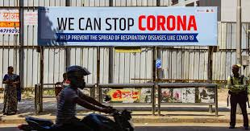
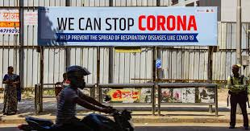

Advices For Public:
Regularly and thoroughly clean your hands with an alcohol-based hand rub or wash them with soap and water. Why? Washing your hands with soap and water or using alcohol-based hand rub kills viruses that may be on your hands.
Maintain at least 1 metre (3 feet) distance between yourself and others. Why? When someone coughs, sneezes, or speaks they spray small liquid droplets from their nose or mouth which may contain virus. If you are too close, you can breathe in the droplets, including the COVID-19 virus if the person has the disease.
Avoid going to crowded places. Why? Where people come together in crowds, you are more likely to come into close contact with someone that has COIVD-19 and it is more difficult to maintain physical distance of 1 metre (3 feet).
Avoid touching eyes, nose and mouth. Why? Hands touch many surfaces and can pick up viruses. Once contaminated, hands can transfer the virus to your eyes, nose or mouth. From there, the virus can enter your body and infect you.Stay home and self-isolate even with minor symptoms such as cough, headache, mild fever, until you recover. Have someone bring you supplies. If you need to leave your house, wear a mask to avoid infecting others. Why? Avoiding contact with others will protect them from possible COVID-19 and other viruses.
If you have a fever, cough and difficulty breathing, seek medical attention, but call by telephone in advance if possible and follow the directions of your local health authority. Why? National and local authorities will have the most up to date information on the situation in your area. Calling in advance will allow your health care provider to quickly direct you to the right health facility. This will also protect you and help prevent spread of viruses and other infections.
Keep up to date on the latest information from trusted sources, such as WHO or your local and national health authorities. Why? Local and national authorities are best placed to advise on what people in your area should be doing to protect themselves.
Advice on the safe use of alcohol-based hand sanitizers
To protect yourself and others against COVID-19, clean your hands frequently and thoroughly. Use alcohol-based hand sanitizer or wash your hands with soap and water. If you use an alcohol-based hand sanitizer, make sure you use and store it carefully.
- Keep alcohol-based hand sanitizers out of children’s reach. Teach them how to apply the sanitizer and monitor its use.
- Apply a coin-sized amount on your hands. There is no need to use a large amount of the product.
- Avoid touching your eyes, mouth and nose immediately after using an alcohol-based hand sanitizer, as it can cause irritation.
- Hand sanitizers recommended to protect against COVID-19 are alcohol-based and therefore can be flammable. Do not use before handling fire or cooking.
- Under no circumstance, drink or let children swallow an alcohol-based hand sanitizer. It can be poisonous.
- Remember that washing your hands with soap and water is also effective against COVID-19.
 
